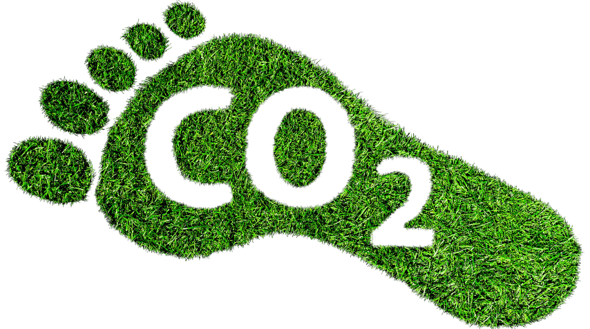

- Home
- Sectoren
Oliefiltratie per sector
Overal waar olie een machine draaiende houdt, houdt Triple R die olie schoon: van spuitgietmachines en persen tot scheepsmotoren, windturbines en testbanken. Kies uw sector voor typische installaties en aanbevolen producten.
Toepassingen per sector
Van spuitgietmachine tot scheepsmotor: overal waar olie een machine draaiende houdt.

Reduce · Reuse · Recycle
Minder olie, een kleinere ecologische voetafdruk
Wie olie reinigt in plaats van vervangt, verbruikt tot 90% minder olie en produceert minder afgewerkte olie. Goed voor uw kosten, en voor het milieu.
Bespreek uw installatie met een specialist
Beschrijf uw machines in 2 minuten en ontvang vrijblijvend advies over de juiste filteroplossing.